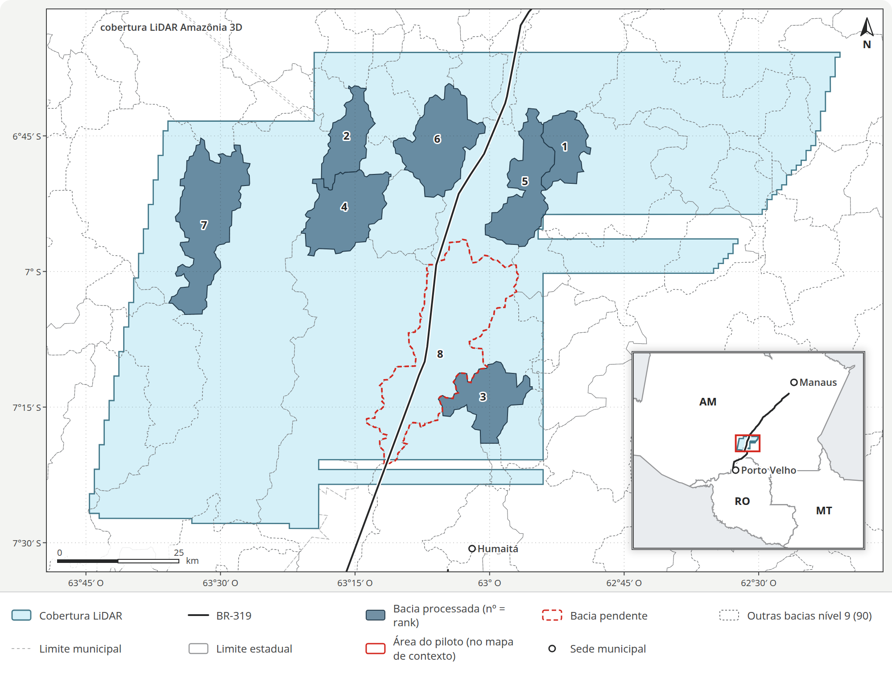
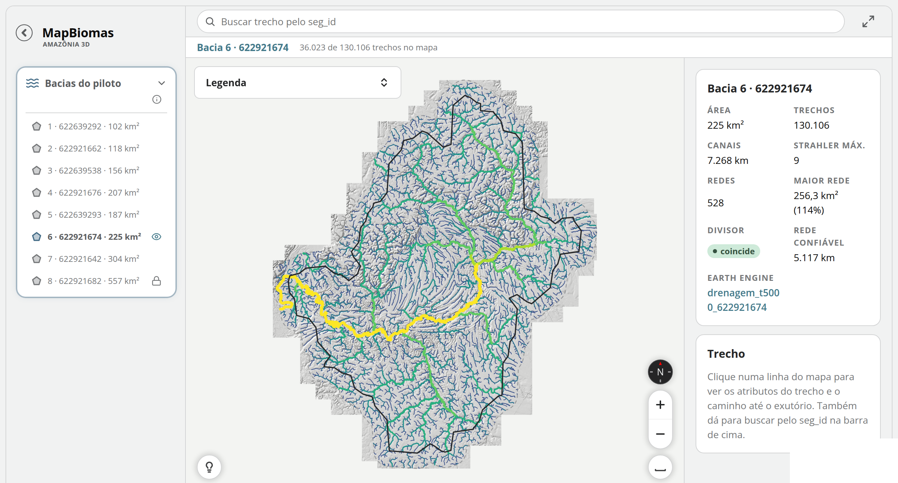
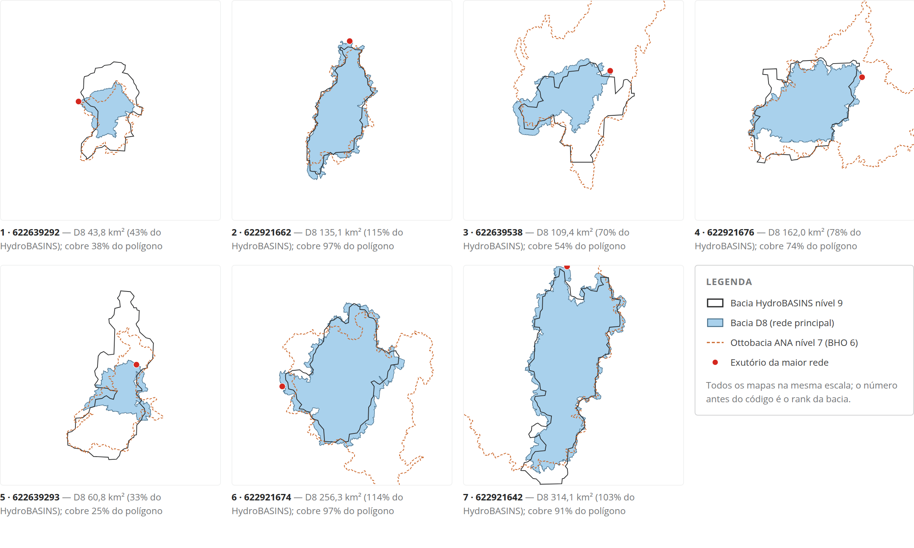
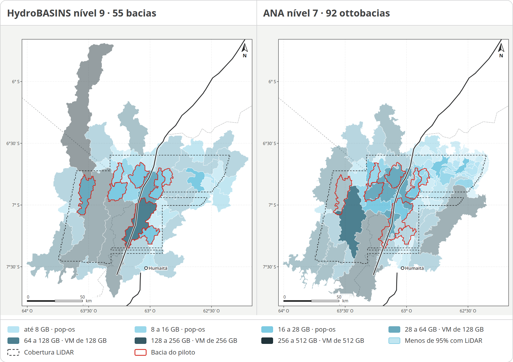

Bacias HydroBASINS nível 9 no LiDAR da Amazônia 3D, sul do Amazonas.
54
tocam o LiDAR
17
com ≥ 95% de LiDAR
8
fechadas
7
processadas
A 8ª não rodou por falta de RAM: precisa de ~65 GB, e a máquina do piloto tem 31 GB. Vai para uma VM de 128 GB.

Fonte: inventário dos 9.213 tiles do MDT LiDAR; HydroBASINS nível 9; BR-319 do IBGE BC250
3 / 13
O que o piloto mostra
A rede LiDAR contém a hidrografia mapeada e enxerga 24 vezes mais canais
7 bacias · 1.298 km² · threshold de 5.000 células
FBDS na rede
92,5%
dos rios da FBDS a até 30 m de um canal LiDAR
IBGE na rede
99,7%
dos trechos do IBGE a até 60 m
Densidade
25,7
km/km² na rede LiDAR, contra 1,07 da FBDS
Divisor
3 de 7
bacias em que o divisor do HydroBASINS se confirma
O ganho é de detalhe: cabeceiras, canais efêmeros e divisores que a cartografia não resolve. O desafio passa a ser decidir quais desses canais contam como curso d’água.
Médias ponderadas, dentro dos polígonos das bacias · relatório, seções IBGE e FBDS e Bacias D8
4 / 13
Como foi produzido
Do MDT de 0,5 m a uma rede com 26 atributos por trecho
Etapa 1
MDT
Mosaico dos tiles, recorte na bacia + 1 km
Etapa 2
Depressões
removepits: o MDT passa a escoar
Etapa 3
Fluxo
Direção D8 e área acumulada
Etapa 4
Drenagem
Canal onde drenam 5.000 células (1.250 m²)
Etapa 5
Trechos
Segmentos, minibacias e HAND
Etapa 6
Vetor
Strahler, topologia, declividade, qualidade
823.642 trechos e 47.381 km de canais nas 7 bacias, publicados por bacia no bucket e no Earth Engine, nos thresholds de 5.000 e 7.500 células.
TerraHidro 5.1.1 sobre TerraLib 5.7.3 · vetorização própria (scripts/drenagem_vetorial.py)
5 / 13
Refino 1 · densidade de drenagem
Aparecem as cabeceiras que a cartografia não mapeia
A rede LiDAR inteira tem 24 vezes o comprimento de canal da FBDS. A partir da ordem 3, ainda 6,5 vezes. Só no corte ≥ 6 a densidade chega à da FBDS.
km de canal por km² de bacia · 7 bacias, 1.298 km² · threshold de 5.000 células
LiDAR, todas as ordens
25,7
LiDAR, Strahler ≥ 2
12,8
LiDAR, Strahler ≥ 3
7,0
LiDAR, Strahler ≥ 4
3,7
LiDAR, Strahler ≥ 5
1,9
LiDAR, Strahler ≥ 6
1,0
LiDAR, Strahler ≥ 7
0,5
FBDS 1:25.000
1,1
IBGE 1:250.000
0,2
Relatório, Figura 4 e Tabela 8 · FBDS: rios simples; IBGE: trechos de drenagem do BC250 · dentro dos polígonos das bacias
6 / 13
Refino 2 · concordância · mini plataforma do relatório
A rede LiDAR passa por quase toda a hidrografia mapeada

Rede inteira
FBDS a ≤ 30 m
92,5%
IBGE a ≤ 60 m
99,7%
Canais novos
30,5 mil
km de canais que a FBDS não mapeia; ela tem 1,4 mil km nas mesmas bacias
Mini plataforma do relatório (bacia 6, ordens 3 a 9): bacias, FBDS, IBGE, ANA, bacia D8 e atributos de cada trecho
7 / 13
Refino 3 · divisor de bacias
O LiDAR redesenha as bacias: o divisor do HydroBASINS vale em 3 de 7

Bacia D8: tudo o que drena para o exutório da maior rede LiDAR, refeita pelo próprio MDT.
Coincide nas bacias 2, 6 e 7 (≥ 90% do polígono). Na 1 e na 5, só 38% e 25%: o polígono reúne redes que saem por pontos diferentes.
As ottobacias nível 7 da ANA também não coincidem: IoU de 0,21 a 0,59, exceto a bacia 2 (0,83).
Relatório, Figura 3 e Tabela 4 · HydroBASINS nível 9 (MDE de 15″) · ANA BHO 6 (1:100.000)
8 / 13
Impacto · APP de 30 m
A área de APP depende de quais canais contam como curso d’água
APP nas 7 bacias (1.298 km²)
estimativa a partir do eixo
LiDAR, Strahler ≥ 3
30,9%
400,7 km² · faixa de 30 m
FBDS 1:25.000
6,7%
86,8 km² · APP publicada pela FBDS
IBGE BC250
1,3%
17,0 km² · faixa de 30 m calculada
Com a rede inteira, a faixa cobriria 85% das bacias. O Código Florestal protege cursos perenes e intermitentes, não efêmeros: a regra que separa uns dos outros é a decisão de método que define a APP a partir do LiDAR.
% da área das 7 bacias · relatório, seção APP, Tabela 6
9 / 13
Impacto · limiar de canal
Subir o threshold enxuga as cabeceiras, mas não aproxima a rede da cartografia
ORDENS 3 A 9
5.000 CÉLULAS
7.500 CÉLULAS
FBDS
IBGE
Área mínima para virar canal
1.250 m²
1.875 m²
—
—
Densidade de drenagem
7,0 km/km²
5,8 km/km²
1,1 km/km²
0,2 km/km²
APP / área das bacias
30,9%
25,9%
6,7%
1,3%
Na rede inteira, o limiar maior tira 36% dos trechos e 20% do comprimento, e a estrutura fica: mesmos exutórios, mesmas bacias D8. O que decide quanto da rede conta como curso d’água é o corte por ordem, ou outra regra, e não o threshold.
Relatório, seção 5.000 × 7.500, Tabelas 7 e 8 · dentro dos polígonos das 7 bacias
10 / 13
O custo do detalhe
Processar a 0,5 m é pesado, mas previsível
Processamento das 7 bacias
7 de 8 concluídas
Células
12,19 bi
a 0,5 m, nas 7 bacias
Tempo
14 h 37
de 1 h 45 a 3 h 16 por bacia
Memória
~10 B
de RAM por célula; 26 GiB na maior
removepits
74%
do tempo do TerraHidro, num núcleo só
A memória cresce em linha com o número de células, então dá para estimar cada bacia antes de rodar. A bacia 8 (557 km², 6,36 bi de células) pede ~65 GB e vai para uma VM; cerca de 40% do tempo é transferência com o bucket.
Máquina do piloto: 12 núcleos, 31 GiB · relatório, Parte 3 (Tempos, Recursos, Custo)
11 / 13
Infraestrutura · RAM por bacia
Antes de rodar, já se sabe em que máquina cada bacia cabe

Cabem na estação local (28 GB)
HydroBASINS 9
34 de 55
bacias; a maior pede 274 GB
ANA nível 7
71 de 92
ottobacias; a maior pede 217 GB
Com 11 bytes por célula (recorte com 1 km de borda, a 0,5 m), a RAM sai da área. As ottobacias da ANA, menores, cabem mais na estação local; as que passam de 28 GB vão para VMs de 128 a 512 GB.
Relatório, seção Infraestrutura, Figuras 8 e 9 · todas as unidades que tocam a cobertura LiDAR
12 / 13
Próximos passos
Transformar o detalhe em produto para APP e para bacias
Frente 1
Definir o que é curso d’água
O critério que transforma a rede LiDAR em APP.
Frente 2
Fechar o piloto
Completar as 8 bacias e consolidar a qualidade dos produtos.
Frente 3
Escolher a unidade de bacia
HydroBASINS, bacia D8 do LiDAR ou ottobacias da ANA.
Frente 4
Escalar
Levar o processamento para toda a cobertura LiDAR.
Relatório, seções APP, Achados e Próximos passos
13 / 13
Onde ver os resultados
Relatório completo, mapa interativo e plataforma no Earth Engine